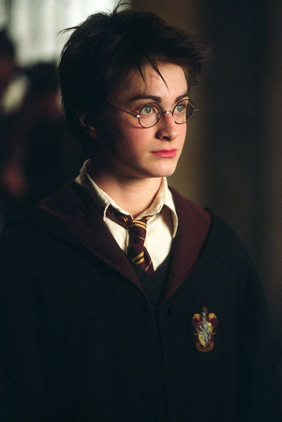
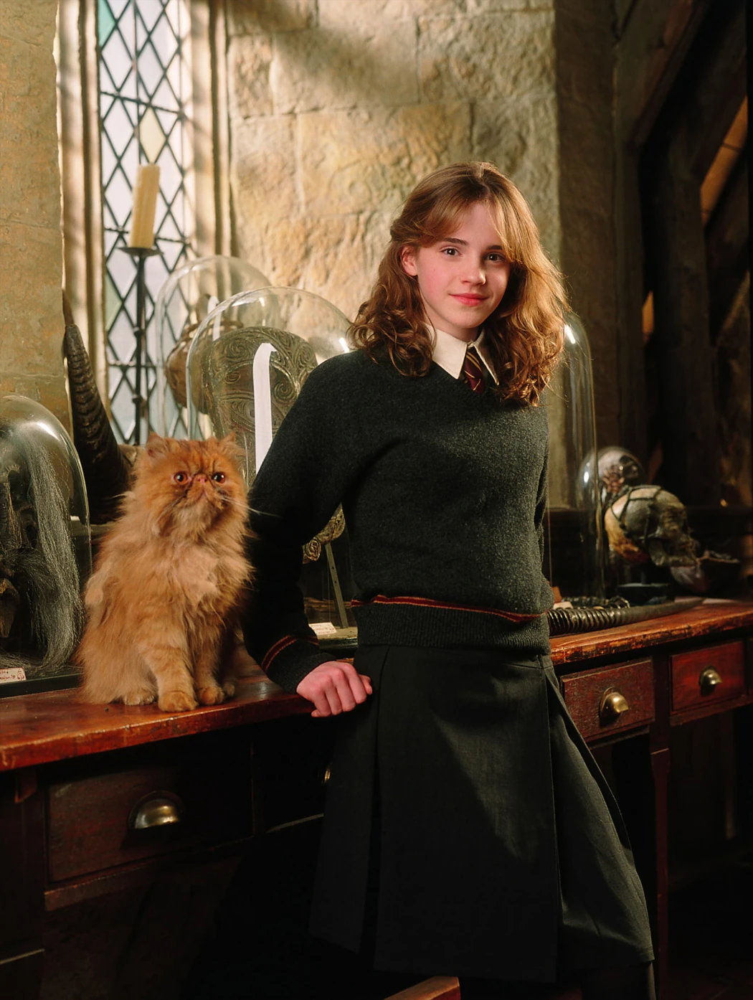
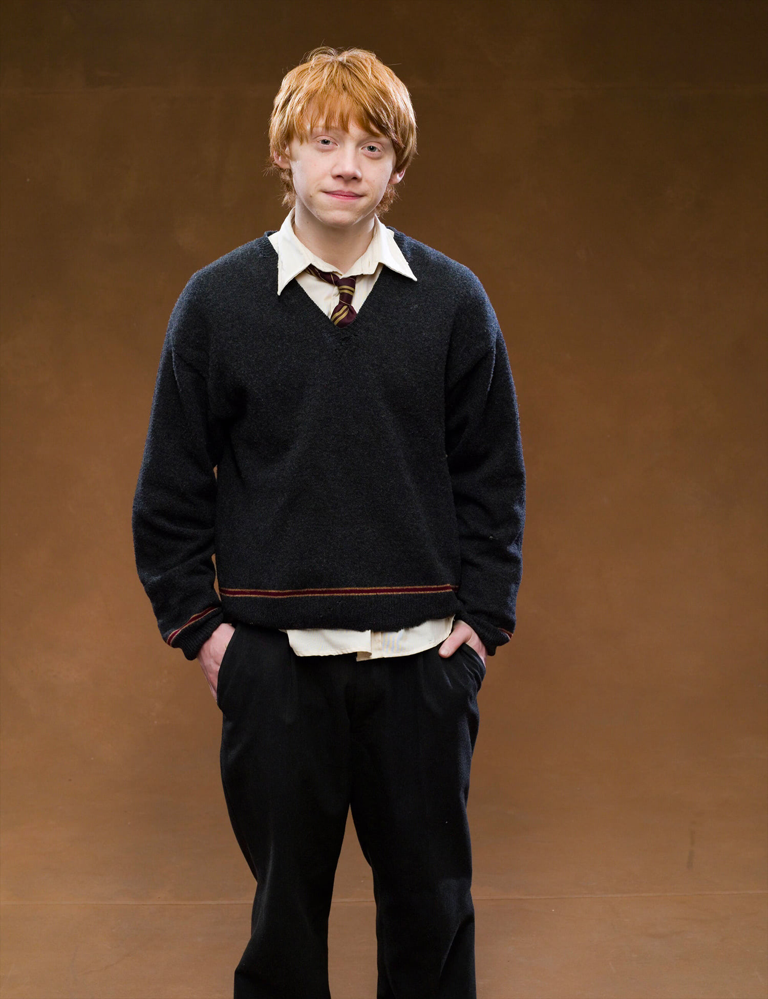
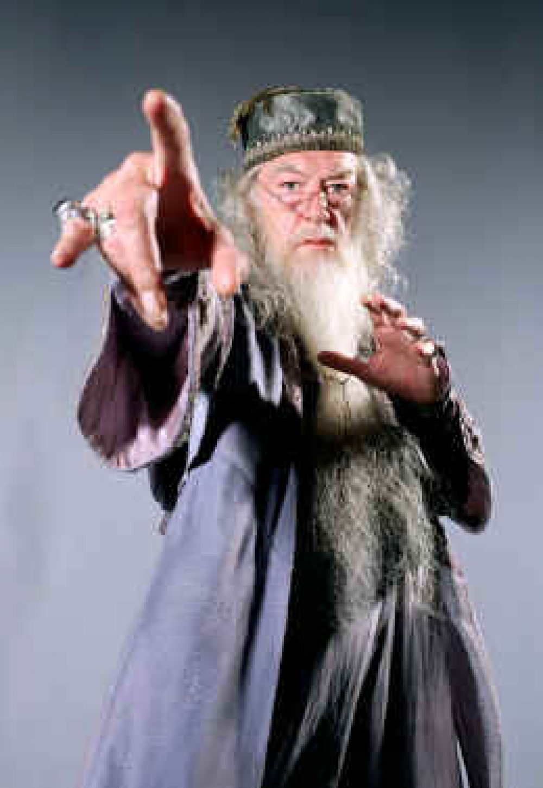
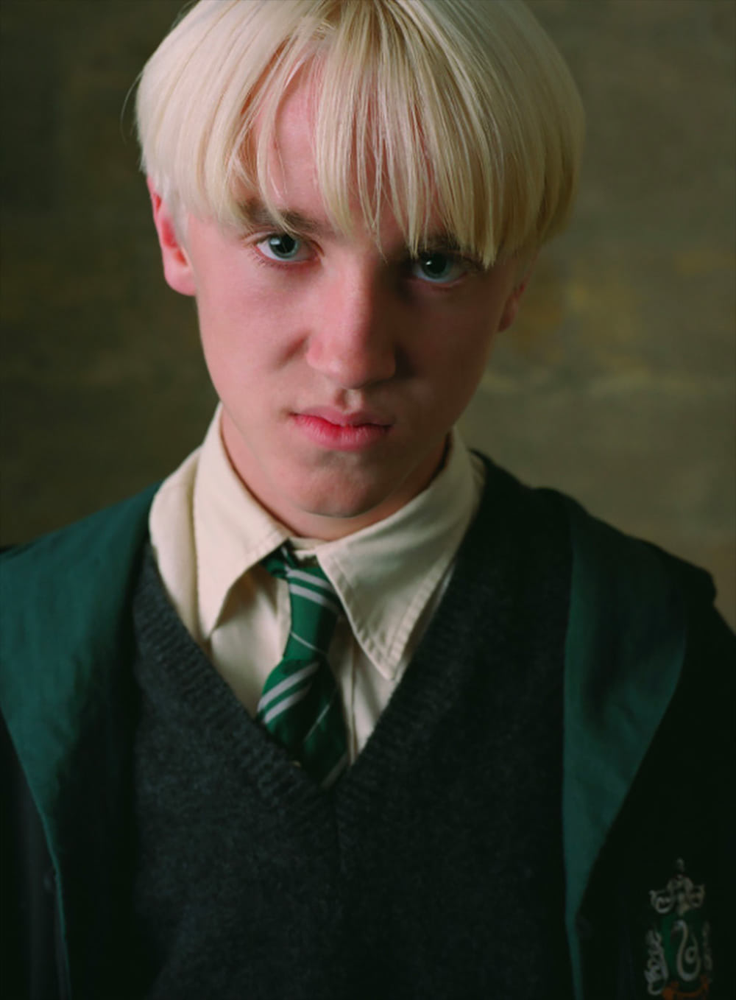
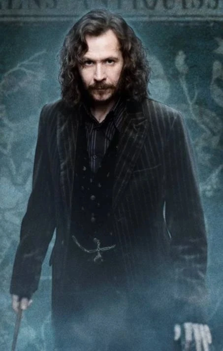
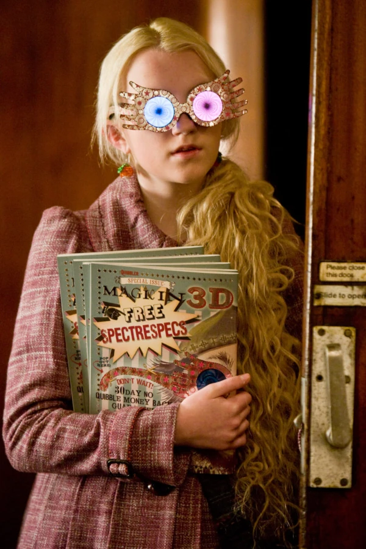
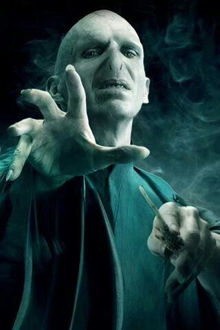

Harry Potter
Conhecido como "O Menino que Sobreviveu", Harry derrotou Lord Voldemort ainda bebê e se tornou uma lenda no mundo bruxo. Em Hogwarts, viveu grandes aventuras ao lado de seus amigos e enfrentou inúmeros desafios para proteger o mundo mágico.

Hermione Granger
Uma das alunas mais brilhantes de Hogwarts, Hermione se destaca por sua inteligência, coragem e dedicação aos estudos. Sua habilidade de resolver problemas foi essencial em diversas missões ao lado de Harry e Ron.

Ron Weasley
Melhor amigo de Harry, Ron é leal, divertido e muito corajoso. Apesar de suas inseguranças, sempre esteve ao lado dos amigos nos momentos mais difíceis, demonstrando grande determinação.

Alvo Dumbledore
Diretor de Hogwarts e um dos bruxos mais poderosos da história. Conhecido por sua sabedoria e liderança, Dumbledore dedicou sua vida à proteção do mundo mágico e ao combate das forças das trevas.

Severo Snape
Professor de Poções e posteriormente diretor de Hogwarts. Embora parecesse severo e misterioso, Snape teve um papel fundamental na luta contra Voldemort e realizou grandes sacrifícios por aqueles que amava.

Draco Malfoy
Aluno da Sonserina e rival de Harry durante boa parte da história. Criado em uma família tradicionalista, Draco enfrenta conflitos internos e passa por um importante processo de amadurecimento.

Rúbeo Hagrid
Guarda-caça e professor de Trato das Criaturas Mágicas em Hogwarts. Gentil e protetor, Hagrid possui um enorme carinho pelos animais mágicos e pelos alunos da escola.

Sirius Black
Padrinho de Harry Potter e membro da Ordem da Fênix. Após anos injustamente preso em Azkaban, lutou para provar sua inocência e proteger seu afilhado das ameaças do mundo bruxo.

Luna Lovegood
Aluna da Corvinal conhecida por sua personalidade única e imaginação extraordinária. Apesar de ser considerada diferente pelos colegas, Luna demonstra grande inteligência, bondade e coragem.

Lord Voldemort
Considerado o maior bruxo das trevas de todos os tempos, Voldemort buscava o poder absoluto e a imortalidade. Sua obsessão o levou a travar uma guerra contra o mundo mágico e enfrentar Harry Potter em uma batalha decisiva.